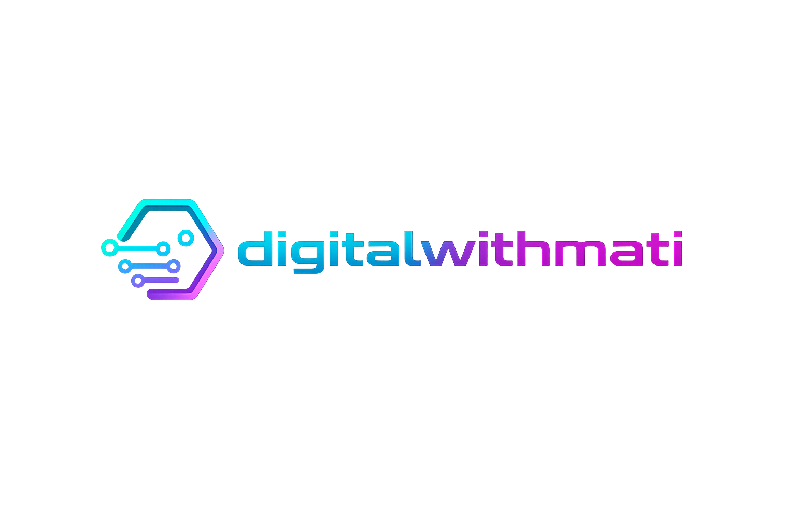

Landing pages, websites, automations, membership systems, bots, payments, and multi-platform digital solutions.

Multiplatform Digital BuilderI create and improve digital products across websites, automation systems, membership platforms, bots, UI/UX, and conversion-focused experiences. From landing pages to payment flows to business tools, I build solutions that actually move things forward.
I do not work in just one narrow lane. I build and improve complete digital environments: pages, automations, systems, business flows, and tools that help brands look more professional and operate more efficiently.
Modern landing pages, redesigns, homepage improvements, sections with stronger structure, cleaner messaging, and better conversion flow.
Telegram bots, workflow automation, welcome systems, quick navigation menus, and process simplification for businesses and projects.
Membership logic, access systems, payment integrations, product/service flows, and custom solutions for digital operations.
I work across multiple environments depending on what the project needs. The goal is not to force one tool for everything — it is to use the right tool to solve the problem.
Built digital structures designed to improve presentation, reduce friction, and increase conversions across websites and service flows.
Created Telegram-based navigation and contact systems that help clients reach information faster and interact more clearly.
Improved site sections, user-facing interfaces, and structural details to make projects feel stronger, more polished, and more useful.
Worked on tailored solutions involving websites, operational logic, digital access systems, payment ideas, and internal business needs.
A selection of real work focused on improving digital presence, user experience, automation, and operational flow.
Improved structure and user flow for a digital platform with gated content, access logic, membership flow, and content organization. Focused on usability, clarity, and smoother navigation.
Built a Telegram-based system to simplify communication, provide structured navigation, connect users with key information, and create a more professional first-touch experience.
Designed and improved landing sections with stronger layout, better hierarchy, cleaner messaging, and a more polished user journey focused on engagement and action.
I adapt to the project. Not every problem needs the same platform, language, or structure.
I am not just designing ideas — I work toward usable, visible, functioning results.
I care about clarity, presentation, conversions, operations, and making digital systems work better in real life.
I look at what the project needs, what is broken, what is weak, and what should improve first.
I create or refine the solution using the right mix of design, logic, structure, and implementation.
I adjust for clarity, polish, usability, and stronger performance so the result feels complete.
If you need a better landing page, a stronger website section, a smarter workflow, a cleaner user experience, or a digital system that actually helps your business move forward — I can help.